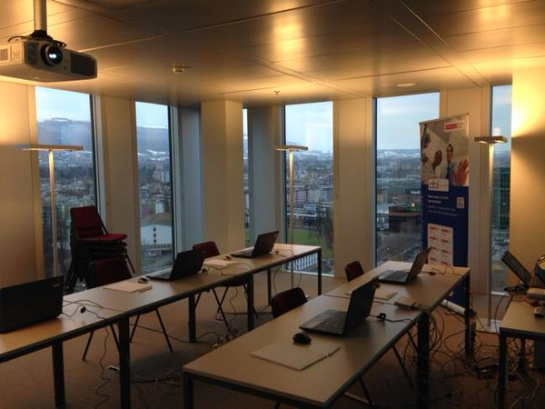

This was first published on https://www.dbi-services.com/blog/random-ora-01017-invalid-usernamepassword-in-12cr2/ (2017-05-16)
Republishing here for new followers. The content is related to the versions available at the publication date.
. 
Since 12cR2 is out, we give our 12c new feature workshop with hands-on exercises on 12.1 and 12.2 releases. When I gave it last month, I had a small problem when doing demos: sometimes the connections as sysdba failed with “ORA-01017: invalid username/password”. It was at random, about one every 5 login attempts and I was sure that the password did not change. As I give another of this training next week, I tried to reproduce and fix this issue and finally found out that the problem was really random: dependent on the entropy when reading /dev/random
The context is special here as the workshop infrastructure is different than a production server. The participants have laptops and connect to VirtualBox machines running on a boosted laptop. This infrastructure is used by all dbi-services trainings, so we are a bit conservative here and still run on VirtualBox 4.3. I’m not sure that it makes a difference, but I didn’t encounter the problem when preparing the VM on my laptop running in VirtualBox 5.1. The VM run only the minimum to be connected through ssh or SQL Developer: just a network interface.
This issue occurred only when connecting to a 12.2.0.1 database. No problem when connecting to 12.1.0.2 even through the 12cR2 lister and with the 12cR2 sqlplus or SQLcl.
So, when I was giving the workshop, with a few demos and exercises on Table Recovery and PDB Point In Time Recovery, I was connecting several times as sysdba though the listener and it failed sometimes with “invalid username/password”. I’m sure about the password, they are all the same in this lab, and I didn’t play with the password file. I didn’t have time to troubleshoot that at that time.
Today, preparing the next workshop, I observed the same problem.
To reproduce it, I have put hundred of connect lines in a script and run it and here is an except of the output:
14:57:34 SQL> connect sys/manager@CDB2 as sysdba
Connected.
14:57:34 SQL> connect sys/manager@CDB2 as sysdba
Connected.
14:57:34 SQL> connect sys/manager@CDB2 as sysdba
Connected.
14:57:34 SQL> connect sys/manager@CDB2 as sysdba
ERROR:
ORA-01017: invalid username/password; logon denied
Warning: You are no longer connected to ORACLE.
14:57:37 SQL> connect sys/manager@CDB2 as sysdba
Connected.
14:57:37 SQL> connect sys/manager@CDB2 as sysdba
Connected.
14:57:37 SQL> connect sys/manager@CDB2 as sysdba
ERROR:
ORA-01017: invalid username/password; logon denied
Warning: You are no longer connected to ORACLE.
14:57:39 SQL> connect sys/manager@CDB2 as sysdba
Connected.
14:57:39 SQL> connect sys/manager@CDB2 as sysdba
Connected.
14:57:39 SQL> connect sys/manager@CDB2 as sysdba
Connected.The failures appear totally random.
Those errors left only the following message in the trace:
Error information for ORA-1017 during Key Generation:
Logon user : SYS
ZT Code Error : The requested operation failed.
I activated errorstack but the information was not very meaningful for me.
Of course, the error message is misleading and something bad happened using the password authentication process. The key generation may be related to AUTH_SESSKEY that is used to encrypt the password send by the client. In order to get more insight into this authentication process, I traced the listener and the child processes for their system calls.
[oracle@srvora05 trace]$ ps -edf | grep tnslsnr
oracle 10063 1 0 14:44 ? 00:00:00 /u01/app/oracle/product/12.2.0/dbhome_1/bin/tnslsnr LISTENER -inherit
oracle 11091 10264 0 15:05 pts/2 00:00:00 grep tnslsnr
[oracle@srvora05 trace]$ strace -o strace.log -e trace=file -f -p 2115&
[1] 9518
[oracle@srvora05 trace]$ Process 2115 attached with 2 threads - interrupt to quit
Here is what I’ve seen when a connection failure occured again:
4722 open("/dev/random", O_RDONLY|O_NONBLOCK) = 7
4722 read(7, 0x160dc7b0, 1) = -1 EAGAIN (Resource temporarily unavailable)
4722 close(7) = 0
4722 open("/dev/random", O_RDONLY|O_NONBLOCK) = 7
4722 read(7, 0x160dc7b8, 1) = -1 EAGAIN (Resource temporarily unavailable)
4722 close(7) = 0
4722 open("/dev/random", O_RDONLY|O_NONBLOCK) = 7
4722 read(7, 0x160dc7c0, 1) = -1 EAGAIN (Resource temporarily unavailable)
4722 close(7) = 0
Sure, the key is generated from random number. The random number is read from /dev/random in non-blocking mode. In blocking mode, reading from /dev/random waits to have enough entropy. Entropy is generated by hardware, and this is limited on a VM, running on a laptop with very few devices. Actually I don’t even know how VirtualBox shares the hardware entropy. Here, Oracle is opening /dev/random in non-blocking mode which is good because it does not wait. But what happens if an error is returned like in the above EAGAIN? Several retries. And then give up. And it seem to generate a key that is not correct, and the authentication process fails then with ORA-1017.
I was surprised to see that Oracle is using /dev/random rather than /dev/urandom and I was surprised that the problem didn’t occur in the previous version. We use a lot of 12.1 databases in the same infrastructure and never encountered the problem. So I traced the same in 12.1 and here it is:
6887 open("/dev/urandom", O_RDONLY) = 7
6887 fcntl(7, F_GETFD) = 0
6887 fcntl(7, F_SETFD, FD_CLOEXEC) = 0
6887 read(7, "\226\203>\351\317\370*\365", 8) = 8
No problem in 12.1 because /dev/urandom is used. urandom is non-blocking and returns a result that may have not enough entropy. Maybe this change was done for 12.2 to prevent a theoretically possible attack, as mentioned in the random(4) man page.
In 12.2 when entropy is enough we can see the following:
9951 read(7, "\341", 1) = 1
9951 close(7) = 0
9951 open("/dev/random", O_RDONLY|O_NONBLOCK) = 7
9951 read(7, "\363", 1) = 1
9951 close(7) = 0
9951 getrusage(0x1 /* RUSAGE_??? */, {ru_utime={0, 6998}, ru_stime={0, 10998}, ...}) = 0
9951 getrusage(0x1 /* RUSAGE_??? */, {ru_utime={0, 6998}, ru_stime={0, 10998}, ...}) = 0
9951 write(15, "\2\t\6\10\6\f\fAUTH_SESSKEY@"..., 521) = 521
9951 read(15, "\4\374\6 \3s\3\376\377\377\377\377\377\377\377\t!\1\376\377\377"..., 32783) = 1276
9951 getrusage(0x1 /* RUSAGE_??? */, {ru_utime={0, 6998}, ru_stime={0, 10998}, ...}) = 0Actually, it seems that the authentication protocol used /dev/random in the past. More info on Uwe Küchler blog post (in German)
Coincidentally, a colleague of mine as posted a blog about Documentum where he needed to increase the entropy.
rngd is installed. I setup it to read /dev/urandom
[root@srvora05 oracle]# cat /etc/sysconfig/rngd
# Add extra options here
EXTRAOPTIONS="-r /dev/urandom"and start it
[root@srvora05 oracle]# service rngd start
Starting rngd: [ OK ]For future reboot I enable it for init:
chkconfig rngd onAs soon as rngd is started, I encountered no connection problems at all.
Note that for security reason there may be a better source of randomness than /dev/urandom. This is the solution for my workshop lab. Haveged is an idea:
so requirement is to install haveged on VMs with 12.2 ?
— Martin Berger 🇺🇦 (@martinberx) May 16, 2017
The method to get an AUTH_SESSKEY to encrypt the password passed by the client has changed between 12.1 and 12.2. It is probably safer now (more entropy) but can fail the authentication when entropy is not enough. I’ve encountered the issue in a very special case: a lab in old version Virtual Box running on a laptop. I don’t know if we will see the same on real production VMs where entropy is probably higher. But it depends on the hypervisor as well. Note that the authentication protocol also generate a key from the client, and a 12.2 client reads /dev/random and who knows where the client is running from.
As the error message is quite misleading and really random, I hope that this post has sufficient information to help to troubleshoot when people will encounter the same issue and search on Google.
This was on OEL 6. In OEL/RHEL 7 the /etc/sysconfig/rngd is not read anymore.You change the option in the execution arguments:
/usr/lib/systemd/system/rngd.service
[Unit]
Description=Hardware RNG Entropy Gatherer Daemon
[Service]
ExecStart=/sbin/rngd -f -r /dev/urandom
[Install]
WantedBy=multi-user.target
and
{kind=link}